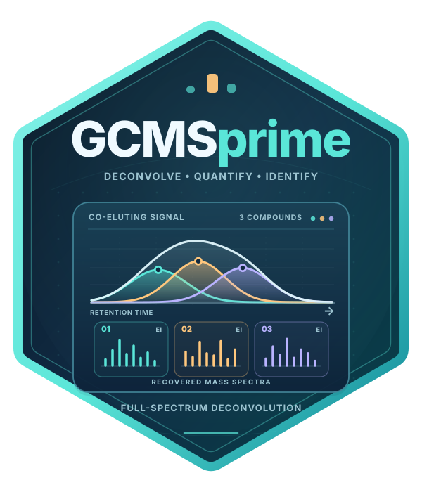

GC/MS DECONVOLUTION · QUANTIFICATION · IDENTIFICATION
Accurate integration.
Cleaner spectra.
Fast and scalable GC/MS deconvolution and quantification for single samples or large multisample experiments to separate overlapping peaks, with inbuilt spectral library search.
R · Full mass spectra · CDF input · MSP & Excel output

DeconvolveResolve overlapping compounds and recover their spectra QuantifyIntegrated areas, fitted profiles and complete reports IdentifyFast spectral matching with column-specific retention indices
A GC–MS run records mixtures of ions whenever compounds overlap in time. GCMSprime separates these signals into elution profiles and full mass spectra, then integrates each resolved compound. It accepts ANDI-MS CDF files and writes an MSP library of the recovered spectra and an Excel quantification table when requested. For a sample series, it aligns retention times and shares spectra across related occurrences.
An alkane ladder can calibrate peak shapes and retention indices. Supplying a spectral library adds ranked candidate matches, with the retention-index agreement and the reference source recorded alongside each score.
See the 16-sample benchmark for peak-area and spectral recovery across seven workflows.
Installation
install.packages("remotes")
remotes::install_github(c(
"tomwenseleers/L0glm/L0glm",
"tomwenseleers/logconNMF/logconNMF",
"tomwenseleers/GCMSprime/GCMSprime"
))The R package includes the conditional Poisson and quasi-Poisson solver. It fits the original ion counts with compiled C++ kernels and uses OpenMP when available. Solver selection is automatic for the requested noise model and memory settings.
Automatic deconvolution for single samples
One call estimates the response shape, smooth background, compound profiles, full mass spectra and integrated areas, then writes NIST-compatible MSP and Excel reports. An alkane ladder can calibrate the PSF and retention indices.
library(GCMSprime)
fit <- gcmsDeco("sample.cdf", "sample.msp", xlsx_file="sample.xlsx",
alkanes_file="alkanes.cdf", precluster=32L)
plot(fit, type="lines", file="sample_traces.pdf")
plot(fit, type="heatmap", file="sample_heatmaps.pdf")
plot(fit, type="profiles", file="sample_profiles_spectra.pdf")The compound table gives apex retention times, integrated areas and the number of fitted ions. Use the trace and heatmap plots to inspect overlapping peaks and residual structure, and use the profile and spectrum plots to inspect individual components.
head(fit$compounds[c("compound", "retention_time", "area", "n_ions")])
fit$seconds
spectra <- coef(fit, normalize="l1") # unit-L1 spectra, shared 0.1% ion cutoffThe fit allows asymmetric and broad profiles under a hard log-concavity constraint. The rank criterion selects the component set, and final refinement uses every original mass channel.
Six co-eluting hydrocarbons
The bundled cuticular-hydrocarbon window illustrates recovered elution profiles and spectra. This short-window example uses a supplied PSF dictionary and a constant background; individual compound shapes are then refined.
data(gcmsData1, package="logconNMF")
writeGCMSCDF(gcmsData1, "GCMS_data1.cdf")
example_fit <- gcmsDeco("GCMS_data1.cdf", "GCMS_data1.msp",
nwindows=1L, baseline_df=1L, precluster=7L, correlation="auto", ncores=8L,
control=list(initial_relaxed=FALSE, fusion_passes=0L),
psf_control=list(kernel_est=logconNMF::convKernel("gaussian", 65L,
list(sigma=9)), maxiter=0L))Among six-factor solutions with chemically plausible retention times, a sensitivity grid over PSF widths and precluster counts selected this fit for its combination of low GIC, accurate apex times, compact profiles and strong enrichment of the compounds’ diagnostic ions.
Beer volatiles and a broad acid peak
A beer-headspace window contains a strongly asymmetric acid peak mixed with narrower neighbours. Flexible log-concave profiles accommodate this shape while the spectra use all 518 channels. The same workflow represents the broad acid contribution as one log-concave profile among the narrower peaks. The single-sample tutorial reports the measured CDF-to-MSP times and fit metrics.
The single-sample tutorial includes both datasets, fitted-signal heatmaps, profile/spectrum panels, timings and downloadable MSP/PDF outputs. GC/MS deconvolution: mathematical basis explains the progression from known PSFs to estimated and component-specific shapes.
Automatic deconvolution for multiple samples
Point to a directory containing sample-group folders and a standards/ subdirectory with alkane calibrations. Acquisition timestamps determine run order. The simultaneous model aligns compounds and shares their spectra while retaining sample-specific profiles, backgrounds and areas.
experiment <- gcmsDeco("chromatograms", output_dir="experiment_results",
precluster=32L, batch=list(plots=TRUE))
experiment$samples
experiment$areasGrouped PSF regressions divide the core budget between independent samples and native threads. The scheduler estimates how many regressions fit in available memory, including Windows commit headroom. After those workers exit, a single process shares the original ion counts and fitted means. OpenMP updates elution profiles across samples. It fits each ion’s shared spectrum and sample-specific background coefficients independently, keeping a fixed component order within each ion. The general identity-link solver can stream original-channel blocks from disk. ## Benchmarks against other software
The same 16 simulated chromatograms were supplied to every program. Each contains 10,000 scans × 550 nominal mass channels (m/z 30–579), covering approximately 50 minutes. Together they contain 88 million simulated ion intensities. Each of the 1,000 distinct compounds occurs in eight randomly chosen samples. The design therefore contains 8,000 positive sample–compound pairs. Rank here counts the distinct generating compounds across the batch, each with a time-local elution profile in each positive sample. Of the compounds, 990 have exponentially modified Gaussian (EMG) peaks and ten have a rising shark-fin profile with an abrupt trailing edge. Higher concentrations broaden both types. The acquisition clock allows a smooth retention shift of up to 2.93 seconds between the first and last injections and approximately 2% variation in scan spacing.
GCMSprime, using simultaneous logconNMF, recovered the true rank of 1,000 exactly in 35.95 seconds per sample. It recovered 8,000 of 8,000 compound occurrences and made no false-positive calls. The recovered peaks included 80 of the 80 acid occurrences. MSHub returned 1,414 deconvolved components, 41.4% above the true rank. The other five workflows produce peak lists or aligned feature groups. Their outputs do not define a common factorisation rank.
The 1,000 shared factors matched the 1,000 generating compounds one-to-one across all eight occurrences of each compound. This is exact automatic recovery of the chemical component count from 550 measured ion channels. Scan order distinguishes compounds that elute at different times, and each compound contributes a shared spectrum wherever it occurs.
Published rank-selection experiments put the scale in perspective. Distributed NMF (DnMFk) recovered seven planted factors in a one-terabyte matrix. Eswar et al. compared NMF rank selectors at true rank 10. Fu et al. tested nonnegative tensor rank selection at true ranks 15–40. The 1,000 compounds here are 25 times the largest generating rank in that tensor experiment. These studies use different data models and assess different kinds of rank. Chennupati et al. · Eswar et al. · Fu et al.
| Workflow | Seconds/sample | Estimated rank (true 1,000) | TP | FP | FN | Acid TP / 80 |
|---|---|---|---|---|---|---|
| GCMSprime | 35.95 | 1,000 (exact) | 8,000 | 0 | 0 | 80 / 80 |
| MS-DIAL | 16.02 | — | 7,728 | 11,685 | 272 | 73 / 80 |
| mzmine GC-EI | 6.92 | — | 4,202 | 185 | 3,798 | 29 / 80 |
| eRah | 25.94 | — | 7,172 | 5,615 | 828 | 70 / 80 |
| AMDIS | 28.99 | — | 7,878 | 9,122 | 122 | 80 / 80 |
| xcms + CAMERA | 4.22 | — | 7,261 | 890 | 739 | 31 / 80 |
| MSHub | 15.05 | 1,414 | 7,179 | 12,184 | 821 | 50 / 80 |
Among GCMSprime’s 8,000 matched occurrences, the median absolute relative area error was 0.095% and ordinary adjusted R² on the log₁₀ scale was 0.999982.


Optimality gap to ground truth-initialised solution
The blind fit descended from 46,273,866 to 32,610,830. The fit initialised with the true elution profiles reached 32,672,206 after the same eight sweeps. The blind fit finished 0.1879% below that reference. GIC never increased across the 29 blind or 25 reference checkpoints. Both fits ended at rank 1,000 with 8,000 occurrences.
Only the reference received the true unit-area profiles and compound identities. Both fits estimated spectra, areas, profiles and background from the same noisy counts. The open circle marks the fourth sweep, when the reference met the ordinary stopping rule. The red line marks its final GIC after four further full sweeps. These trajectories give an empirical comparison. The global minimum is unknown.

Elution profile recovery
The examples are the EMG compound and the acid with the greatest total true area in their respective classes. Both were selected from the simulation before comparing any fits. Each occurs in eight samples. Solid curves show inferred profiles, dashed curves show the true profiles, and the eight absent true profiles coincide at zero. Colours order the 16 samples by true area. Heights retain original total-ion intensity per scan. The mean cosine in each example uses all eight positive occurrences, with a missing recovered profile scoring zero. The all-acid tally covers all ten acids.


Comparison with other software
On the same 16 files, GCMSprime recovered 8,000 true occurrences with zero false calls. GNPS/MSHub estimated 1,414 batch components. MS-DIAL, mzmine GC-EI, eRah, AMDIS and xcms + CAMERA returned peak lists or aligned features. The seven-workflow benchmark gives their measured recovery and timings. Benchmark results and settings.
The following matrix and tensor models offer other ways to resolve co-elution. The comparison describes their published formulations.
| Approach | What is shared and how peaks are represented | How the component count enters |
|---|---|---|
| GCMSprime / logconNMF | A common spectrum across samples and one log-concave elution profile per occurrence. Width, asymmetry, area and retention time can vary by sample. | Grouped PSF regression proposes peaks. Original-ion GIC scores changes to the shared factors and their support. |
| MCR-ALS, conventional GC–MS NMF and unimodal NMF | Alternating regressions estimate elution profiles and spectra. Nonnegativity and unimodality can be imposed. Poisson MCR also models signal-dependent noise. pyMCR · GC–MS NMF · Unimodal NMF · Poisson MCR | The cited fits use a chosen component count. Diagnostics can guide that choice. |
| Simultaneous NMF and global parametric GC–MS analysis | Simultaneous NMF shares a factor across data matrices. Parametric GC–MS analysis fits shared spectra with an explicit elution model such as an exponentially modified Gaussian. Shared-factor NMF · Global GC–MS analysis | The analyst specifies a candidate model order. |
| PARAFAC and shifted PARAFAC | Trilinear components share their spectrum and elution shape up to amplitude. Shifted PARAFAC also allows translations of that shape. Shifted factor models | Candidate ranks can be compared using diagnostics such as core consistency. Bro and Kiers |
| Classical PARAFAC2 and PARADISe | Elution profiles can vary across samples subject to a common matrix of cross-products. PARADISe applies PARAFAC2 to chromatographic intervals. PARAFAC2 for retention shifts · PARADISe | Candidate ranks are fitted per interval. Automated model assessment is also available. Johnsen et al. |
| Flexible and fully constrained PARAFAC2 | Flexible coupling relaxes the cross-product condition. AO-ADMM can retain the condition while imposing constraints on all modes, including the varying elution profiles. Cohen and Bro · Roald et al. | Both formulations fit a specified number of components. |
| Shift-invariant trilinearity and PARAFAC2×N | Shift-invariant trilinearity uses Fourier-domain information to accommodate elution shifts. PARAFAC2×N extends drift modelling to multiple separation modes in multidimensional chromatography. Shift-invariant trilinearity · PARAFAC2×N | Each model is fitted at a chosen component count. |
Commercial GC–MS software
AnalyzerPro exposes peak-width and detection thresholds. MassHunter Unknowns Analysis can search multiple widths, with a trade-off between resolving close peaks and runtime. LECO ChromaTOF Sync co-processes Pegasus sample sets to improve spectra and align peaks. GCMSprime fits one shared spectrum and a separate log-concave profile per occurrence, and scores candidate splits against the original ion counts. The commercial workflows have yet to be scored on these 16 chromatograms. AnalyzerPro · MassHunter · ChromaTOF Sync Nine commercial workflows compared.
Spectral library search
Open and commercial libraries can be imported. MoNA and Golm MSP collections, GCMS-ID CSV predictions, and OpenChrom-exported Agilent or Shimadzu libraries are supported. Large catalogues can remain in indexed SQLite storage.
lib <- readMSP("library.msp", backend="sqlite", db_file="library.sqlite")
identified <- gcmsDeco("sample.cdf", "identified.msp",
xlsx_file="identified.xlsx", alkanes_file="alkanes.cdf", library=lib,
search=list(phase="DB5", ri_tolerance=30, n_matches=5,
method=c("stein_scott", "hellinger")))The compounds recovered from single- or multisample deconvolution can be automatically annotated using spectral match quality and retention index. Alkane-derived indices first restrict candidates to the selected column class and tolerance; fast native search then ranks their spectra. Multisample consensus IDs support a unique-compound list across the experiment, with sample-specific RI evidence and full match provenance retained.
Stein–Scott, cosine/angular, Hellinger and symmetric probability/count comparisons are available, with optional ion-rarity weighting. Excel and MSP reports include the ranked matches and annotations. The library-import tutorial covers formats and storage; retention indices and library search shows single- and multisample identification. The identification theory gives the formulas, calibration and comparison benchmarks.
Selected references
- Lu et al. (2008) tested how concentration and component-width settings affected GC–TOF-MS deconvolution with AnalyzerPro, ChromaTOF and AMDIS. Comparative evaluation
- Camp (2019) describes how alternating regression lets analysts choose constraints separately for concentrations and spectra. pyMCR
- Lee et al. (2012) fit a common factor across multiple datasets. Simultaneous NMF
- Johnsen et al. (2017) describe the PARADISe workflow for GC–MS. Roald et al. (2022) show how to constrain all modes of PARAFAC2. PARADISe · Constrained PARAFAC2
- Aksenov et al. (2021) describe the GNPS/MSHub workflow evaluated on these 16 chromatograms. MSHub
- Chennupati et al. (2020) infer the number of factors in large matrices. Fu, Matsushima and Yamanishi (2019) compare rank-selection criteria for nonnegative tensors. Distributed NMF · Tensor rank selection
Citation
An article describing the methods implemented in GCMSprime is in preparation. If you use the package before the article is formally published, we would appreciate a citation to the package:
Wenseleers T, Vanderaa C (2026). GCMSprime: Scalable and Automated GC–MS Deconvolution, Quantification, and Spectral Library Search in R. R package version 0.1.0.9000, https://tomwenseleers.github.io/GCMSprime/.
The Authors and Citation page also provides the citation in BibTeX format. Please also cite the methodological sources linked in the help pages where relevant.